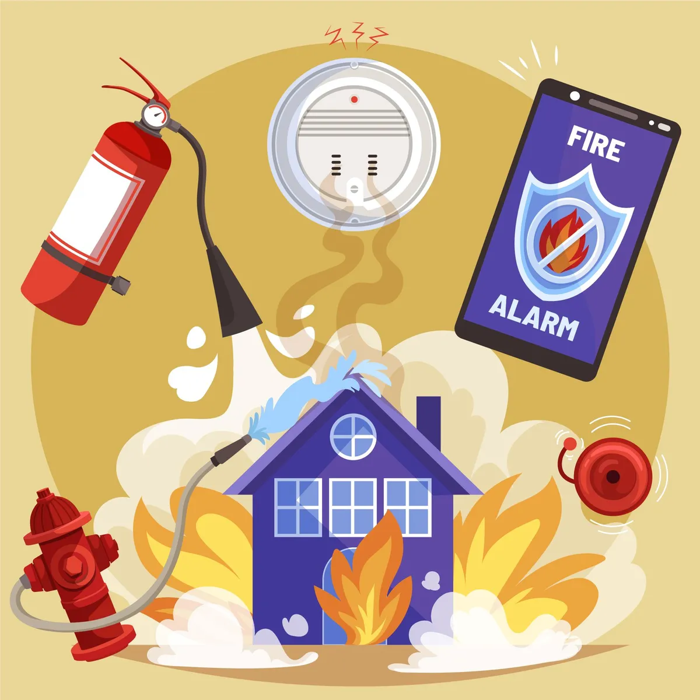

Exit lights are important in ensuring the safety of the building since they direct people to the nearest exit during an emergency. In a fast-developing area, safety is supposed to be taken care of by maintaining these buildings, which accommodate a population as large as in Dubai and across the UAE. Exit signs, among other products related to the fire alarm, do offer a key role in ensuring the safety of human life. In this blog, we look into why exit lights are so crucial, the laws governing them, and how fire alarm system in UAE maintain both safety and compliance
Significance of Exit Lights Exit lights
Emergency exit signs have been so designed that they will light the way even under any type of emergency condition, such as power outage or fire. They make certain that everyone inside the building will be able to leave and evacuate their way out both fast and safely. When it comes to an emergency, having clear and reliable exit lights can spell the difference between losing lives.
Exit Lights Regulatory Requirements
Exit lights should be installed and maintained under strict rules in the UAE. Dubai Civil Defence has regulations to make sure exit lights work properly all the time. These rules are a part of many wide measures for fire safety and include a number of products and systems of fire alarms of various types.
Most Key Requirements include:
Placement and Visibility: The exit lights have to be placed in a position such that each part of the building can clearly see one or more, located in a position that indicates the direct route to the nearest exit.
Lighting: The exit lights must have enough brightness to be seen even in dimly lit, fuzzy environments. To remain lit in the event of an outage of electricity, people have to have a backup power supply.
Maintenance: To make sure that they always operate lights that signal the way to an exit should be checked on a regular basis. This entails regularly testing them and quickly solving issues.
Fire Alarm Systems Contractors – Dubai
Fire alarm system contractors play a significant role in Dubai, which includes ensuring that buildings are compliant with fire safety regulations; exit lights should be installed and maintained correctly. They know the local rules and standards and thereby will in general come out as important in maintaining safety and compliance.
Services Offered by Fire Alarm System Contractors
Assessment and Planning:** Contractors are to assess the design of the building and show the best location for exit lights and other products for a fire alarm system. This would inherently guarantee full coverage with the capacity to display exit routes.
Install: It is very crucial to have the right setup for exit lights. Contractors are equipped with quality materials to install and implement best practices in the field to ensure that the work is reliable.
Maintenance and Testing: Exit lights need to be maintained on a regular basis if they are to be continuously operational. Contractors offer routine inspections as well as testing services to be done promptly.
Guarantee of Conformity: Contractor stay updated on laws that are always changing. In order to assist owners avoid fines and penalties, they confirm that all fire safety systems, include exit lights, are up to date with the newest standards and comply with all applicable regulatory requirements.
Integrations with Other Fire Alarm Products
Exit lights are one part of a comprehensive fire safety system. They work together with other fire alarm products to provide complete safety coverage.
Key Fire Alarm Products
Manual Call Point in UAE: Such devices enable the occupants of a building to raise an alarm manually. These devices have strategic positions across buildings where they are easily reachable in times of emergency.
Smoke Detectors and Alarms: These are devices used to detect smoke and then trigger a fire alarm system in such a way that the system can be used to alert the occupants to evacuate.
Control Panels: The central controller of a fire alarm system that receives the incoming signals from the detectors and manual call points, then sets the alarms and exit lights.
Conclusion
Exit lights are a vital component in a building’s safety system, as they show people the way out of danger. Observing fire safety rules is the most important condition that must be observed in Dubai and the UAE. Fire alarm companies in UAE play a very important role in this area. The integration of exit lights with the array of other products related to the fire alarm, such as manual call points and smoke detectors, assures the building owners of their overall safety and regulation adherence. Regular maintenance is the key to compliance with regulations and the operative state of these systems when they are most needed. Investing in reliable fire safety systems and working with experienced contractors help to enhance safety, which means that an individual can have peace of mind knowing the building is prepared in case of any emergency.